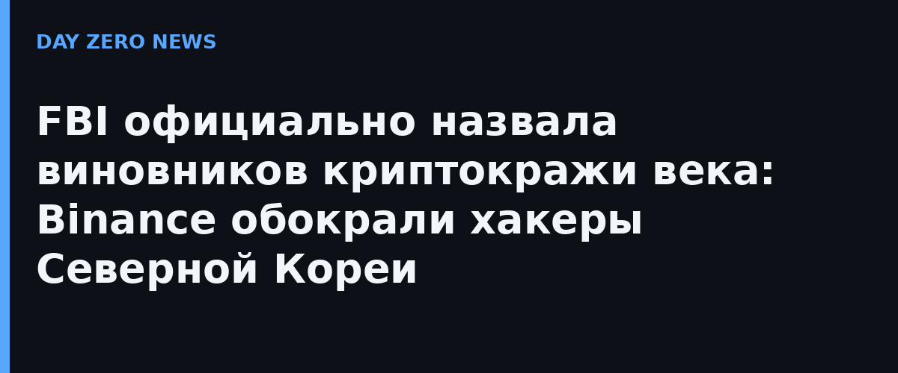

В субботу ФБР выпустило официальное предупреждение: ответственность за кражу более $6 млрд в виртуальных активах с Binance «29 октября 2026 года или около того» несёт КНДР. Исполнитель — группа TraderTraitor, она же Lazarus Group, Jade Sleet и APT38, годами промышляющая охотой на криптобиржи. Это не подозрение аналитиков — TRM Labs и Chainalysis указывали на них ещё раньше, теперь к выводу официально присоединились ФБР, Секретная служба США и криминальное управление IRS.
Binance сама связала взлом с ноутбуком DevOps-инженера: через него атакующие попали в сервисный контейнер и подписали несанкционированные выводы. Около $6,36 млрд в криптовалюте на десяти блокчейнах ушли примерно за двадцать минут — это крупнейшая криптокража в истории. По наблюдению ФБР, злоумышленники уже переводят добычу в Ethereum, а дальше планируют отмыть через DeFi-платформы и мгновенные обменники.
Вместе с предупреждением опубликован список из 628 адресов, связанных с кражей: 608 в Ethereum, 19 в Bitcoin и один в Solana. Биржам, операторам блокчейнов и прочим провайдерам виртуальных активов предписано блокировать транзакции, связанные с этими адресами. Пока биржи замораживали активы, Binance приостанавливала выводы, но к 1 ноября уже заявила, что выводы возобновлены и биржа «стабильна».
Практический вывод для владельцев криптоактивов: массовая кража с биржи почти никогда не «чужая» — проверяйте статус выводов своей площадки, не держите большие остатки на горячих кошельках бирж и включайте адресные списки и задержки на вывод. Если у вас были сделки с адресами из публичных санкционных списков ФБР, транзакции могут начать отклоняться — это нормальное поведение комплаенса, а не сбой.
Рекордные $6,3 млрд — это не просто цифра: северокорейские группировки, по оценкам западных разведок, направляют криптокражи в финансирование ракетной программы, поэтому такие истории теперь заканчиваются не заметкой в базах, а межведомственным предупреждением трёх силовых структур. Для индустрии же урок старый: точка входа — не блокчейн и не смарт-контракт, а обычный ноутбук инженера с доступом к подписи транзакций. Один скомпрометированный DevOps-аккаунт оказался дороже всех аудитов кода вместе взятых.